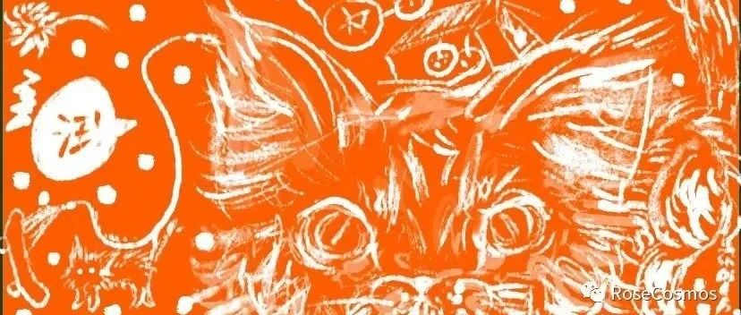

千万不要路边捡小猫回家20条
1.你妈怎么养你的你也见识过了，你过得好吗？
你半夜听爱情伤逝的歌，早上听人生孤单的碟吗？
2.无条件爱过谁，爱你自己吗？
3.你要是为活着的孤单感到羞耻，就难以爱自己，爱生命脆弱，爱体重小自己十几倍的小动物。
4.不爱，就不爱吧！不可耻！但做动物实验可耻！不要拿小猫可爱，被爱是理所当然，来作为你能不能拥有爱关系的试纸。
5.我们聊了爱，你敢不敢聊自由？
6.你捡路边的小猫回家的时候，想过自由吗？
7.或者我们换种说法，因为无能和粗暴限制自由，用误以为自己能负责的不负责任，来制造一种毫无生机的安全。
8.你说猫是城市里的顶级掠食者，破坏了城市生态，for fuck sake，你知道谁是城市里的顶级掠食者：残暴，懒散，脆弱。负点责吧！
9.为自由负责是很困难的，自由摧枯拉朽，生命狂涌。
10.另外一个生命进入你的生活，你当ta是开玩笑呢？请全力以赴。
11.无能就无能吧！不要自恋！
12.不要因万物可爱，爱意泛滥，最后因自身无能，得过且过。别过！
13.（千万不要随便领养小动物！
14.我们聊了自由，当然准备好了正式的告别：死亡。
15.世界上无数小猫因为成千上万的理由，死在成千上万的地方，你也一样。
16.我们没有人能假装为死亡负责，你也一样，但对活着要尝试负责到底的——负责到死。
17.但如果第十七遍，我劝你，不要捡小猫回家，你还是说，我好爱ta呀，以后我们要一起生活。那么现在请你来试试看。
18.接受退养，你活着的环境里没有保底系统，你歇斯底里，大可不必。生物无论如何都会死，今天明天，没有差别。
19.做好决定，坚持两个月，两个月之后发现爱无能阳性，没有关系，可以送回来处。
20.多和小猫一起晒太阳。
🧡🧡🧡
今朝作伴，感谢有你。